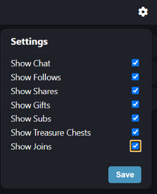
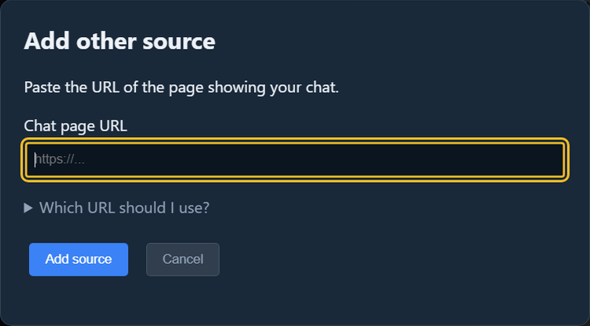
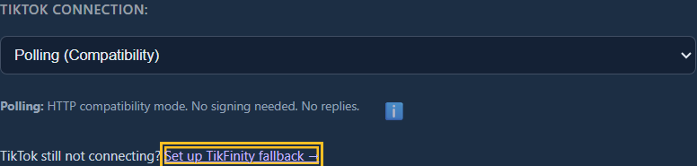

When to use this
If SSN's direct TikTok modes keep failing or missing messages, TikFinity offers another way to receive the LIVE chat. It may help when TikTok blocks or limits connections from your network, provided TikFinity can still connect to the stream.
This connection receives chat and supported activity. It does not send TikTok replies. You do not need OBS to use a TikFinity OBS Dock as an SSN source.
- TikFinity account: sign in to TikFinity, or create its free account if prompted. An existing browser session may already be signed in.
- TikTok account: this read-only setup uses a username; it does not require signing in to that TikTok account. We tested it with another public LIVE account. The selected account must be live and accessible to TikFinity.
- Keep TikFinity running: leave one main TikFinity dashboard tab open and connected throughout the stream.
1. Connect TikTok · 2. Choose activity · 3. Add to SSN · 4. Check capture · Troubleshooting
SSApp: direct TikFinity Desktop connection (beta)
Development builds after SSApp 0.4.32 also offer TikFinity Desktop (Local API, Beta) in the existing TikTok Connection dropdown. If that choice is missing, use the Activity Feed instructions below.
- Run TikFinity Desktop on the same computer as SSApp. Sign in to TikFinity and connect your LIVE stream there.
- Check TikFinity's Event API. SSApp connects to its local endpoint automatically; no API key or dock URL is needed.
- Stop your existing SSApp TikTok capture, choose TikFinity Desktop (Local API, Beta), and activate it.
- Wait for Receiving LIVE events from TikFinity Desktop and check a new message in the SSN dock. Hover over the connection status for recent activity information.
This captures the stream selected in TikFinity, regardless of the username entered in SSApp. It is read-only. Use only one capture source for that stream to avoid duplicates. The local API can provide likes and viewer counts as well as chat and gifts; SSN's existing event filters still apply.
Connected to TikFinity Desktop confirms the local connection only. If LIVE events stop, check TikFinity's dashboard and selected stream. SSApp reconnects when Desktop closes its local connection; it cannot repair TikFinity's upstream connection.
1. Enter the TikTok username in TikFinity
- Open TikFinity Setup. If you already have a TikFinity dashboard open, use its Setup navigation instead of opening another tab. Sign in to TikFinity if prompted.
- Under Connect TikTok Account, enter the TikTok username of the public LIVE you want to capture. Use the account's username, not its display name.
- The username setting saves automatically; there is no separate Save button to press for this step. Wait for TikFinity to connect and confirm that new activity arrives.
2. Choose what the Activity Feed shows
- In the same TikFinity tab, go to Overlays → OBS Docks, or open TikFinity OBS Docks.
- Choose Dock 1 or Dock 2. Open its gear/settings button.
- Check Show Chat and every activity category you want to see: follows, shares, gifts, subscriptions, treasure chests, and joins.
- Click Save in the dock settings. This Save button is separate from the automatically saved username setting.
- Copy that dock's URL. Use the URL from your own TikFinity page.

In the new TikFinity dashboard, copy the Activity Feed's browser-source URL, which looks like https://widgets.tikfinity.com/YOUR_TOKEN. Keep this token private. Older URLs such as https://tikfinity.zerody.one/widget/activity-feed?cid=YOUR_ID&did=1 are also supported. Keep the complete copied URL. Do not paste the Setup or OBS Docks configuration page into SSN.
These checkboxes control what the TikFinity widget displays. SSN also has its own event filters; enabling a category here does not override an SSN filter.
Dock display preferences are saved in each browser. If the capture page in SSApp shows different categories from your Chrome preview, open the gear button in that capture page and choose its categories too.
3. Add the dock URL to Social Stream Ninja
- In SSApp, open Sources and Settings and choose Add other source (called Other chat sites in older versions).
- Paste the complete TikFinity Activity Feed URL, add the source, and activate it. SSApp detects TikFinity automatically.
- Stop any direct TikTok source capturing the same LIVE so messages do not arrive twice.
- Keep both the TikFinity dashboard and the SSApp capture source running.

Already added TikFinity? Stop that source, click Set OBS Dock URL, paste the Activity Feed link, save, and activate it again. If your SSApp version only shows Sign-in, add the correct feed link through Add other source and remove the old source. Signing in to the dashboard does not supply or replace the feed URL.
You can find this guide again beside the TikTok Connection options in an SSApp TikTok source's configuration.

4. Check new messages in SSN
- Open your SSN chat dock and wait for a new TikTok message. Do not use older messages still visible in TikFinity as a capture test.
- Confirm the new message appears once in both TikFinity and SSN, with the correct name and text.
- Watch a follow, share, or gift when one occurs. In SSN settings, enable Capture "joined" stream events if you want joins, and check that donation/event filters allow the activity you want.
- Leave it running for a few minutes and check that later messages continue to arrive.
- Use your normal SSN overlay URL in OBS, with the same SSN session. See OBS Quick Start if needed.
SSN treats these messages as TikTok for source filters and existing overlays. Supported activity includes chat, gifts and gift streaks, follows, shares, subscriptions, joins, and treasure chests. The Activity Feed does not display likes or viewer counts.
Built-in TikTok emoji codes such as [laughcry] and [wow] render as images in an updated SSN source. Text-only mode intentionally keeps text instead; reload the TikFinity source after changing that setting.
If something is missing
- Only the TikFinity logo appears: check that the selected TikTok account is live and that TikFinity's main dashboard is connected. An open widget alone does not establish the upstream TikTok connection.
- TikFinity has old messages but SSN is empty: wait for new activity, confirm the full dock URL, and reload the SSN source. If the widget itself stops receiving new messages, reconnect TikFinity first.
- Chat is missing from Dock 2: open the gear button, enable Show Chat, and Save.
- Gifts, joins, or other events are missing: check the dock's categories and SSN's own event/donation filters. A category cannot be verified until that event happens.
- Another TikFinity page interrupts the connection: keep one main dashboard tab open. Use its navigation to change sections; the Activity Feed capture window is separate.
- Everything appears twice: keep only one capture source for that LIVE. Repeated identical messages with different TikTok message IDs can also be genuine separate messages.
- Replies do not work: TikFinity capture is read-only. See direct TikTok connection options for reply support.
TikTok quick start · TikTok signing help · Other overlay sources